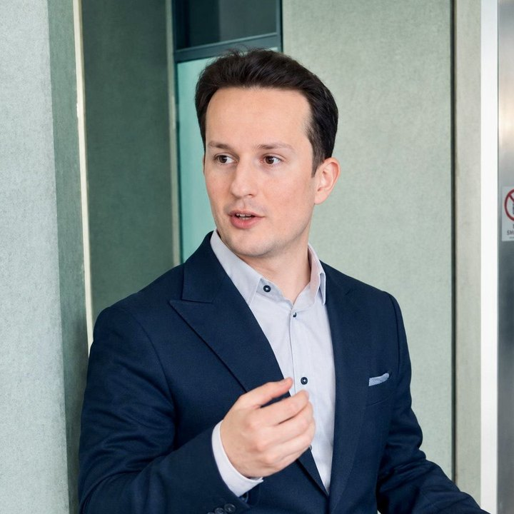

Mechanistic + data-driven
Training strategies and graph-theoretic formulations of hybrid models that overcome the curse of dimensionality and generalize across datasets.
Hello, I'm
Postdoctoral Researcher · Computational Biomedicine
I develop hybrid models that combine mechanistic and data-driven methods to make machine learning in healthcare more reliable, interpretable and clinically trustworthy.

I am a postdoctoral researcher at the Institute for Computational Biomedicine at University Hospital RWTH Aachen, working in the group of Prof. Andreas Schuppert.
My research centers on hybrid modeling, the principled integration of mechanistic and data-driven methods. I apply it to ICU mortality prediction across multiple hospitals, non-invasive ventilation outcome prediction, and glucose–insulin dynamics in diabetes. The goal is to combine methodological contributions with validated clinical applications.
I trained as a physicist (B.Sc. and M.Sc., Sharif University of Technology) before completing my Ph.D. in Computational Engineering Sciences at RWTH Aachen University in 2025.
Training strategies and graph-theoretic formulations of hybrid models that overcome the curse of dimensionality and generalize across datasets.
Interpretable, generalizable prediction of ICU mortality across hospitals, and early prediction of non-invasive ventilation outcome in acute respiratory failure.
Individualized glucose forecasting and risk prediction in type 1 and type 2 diabetes, including multimodal large language models and mechanistic models.
Uncertainty quantification for binary hybrid models, structural knowledge representation with Kolmogorov–Arnold networks, swarm learning, and the interpretability of large language models.
An open-source Python package for noise-tolerant classification of binary data using max-cut solutions.
Twelve works: ten peer-reviewed and two preprints; first author on eight. Full list on Google Scholar. * equal contribution
Supervised project and internship students in Simulation Sciences and Biomedical Engineering at RWTH Aachen (2022–2025): Ikram Khan, Ijaz Aslamsha, Mo-Chiu Hsu, Tanwi Sadhu, Hedieh Mirzaieazar, Eike Bergen, and joint work with Kateryna Nikulina.
Peer review: Nature Communications, npj Digital Medicine, Scientific Reports, BMC Medical Informatics and Decision Making, Cluster Computing, Journal of Medical Systems, Discover Computing, Big Data, Health Care Management Science.
Organizing: ByteMAL 2023, a bioinformatics and systems biomedicine conference for young international researchers (bytemal.eu).
First-generation academic. My doctoral studies in Germany (2019) began later than planned because of a prolonged visa procedure.
I'm always happy to talk about hybrid modeling, clinical machine learning, or possible collaborations.
Institute for Computational Biomedicine
University Hospital RWTH Aachen, Germany